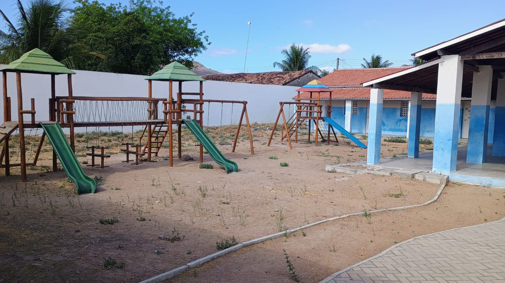

Ibiapaba
Ibiapaba é um lugar marcado por histórias, encontros e lembranças construídas ao longo dos anos. Suas ruas, casas e paisagens fazem parte do cotidiano de muitas pessoas e carregam momentos que permanecem na memória da comunidade. Neste espaço, registramos um pouco dessas histórias e das características que tornam esse lugar especial.

Relato
Entre suas paisagens, encontramos espaços que fazem parte da história de Ibiapaba. Cada detalhe guarda lembranças de momentos vividos, pessoas que passaram por ali e histórias que ajudam a contar um pouco da identidade do lugar.
Nome do autor
Autor do comentário
Localidade
Olhar para essa foto é voltar no tempo. Tantas lembranças, encontros e momentos simples que ficaram guardados na memória. É bonito poder rever um pedacinho de tudo isso.
Ver mair comentários